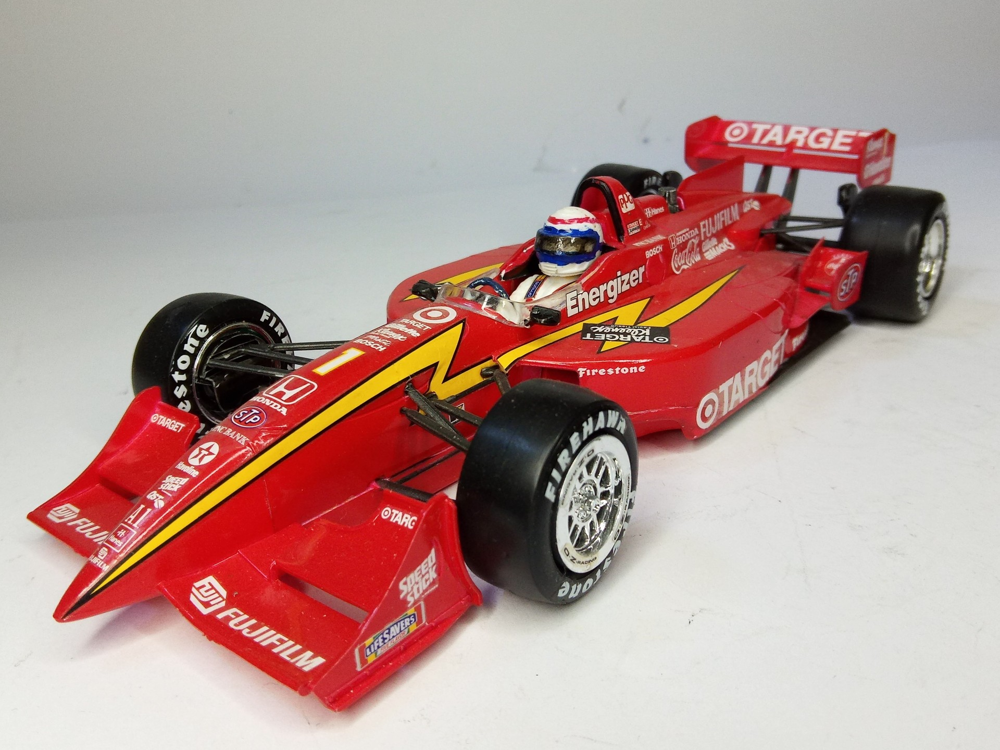
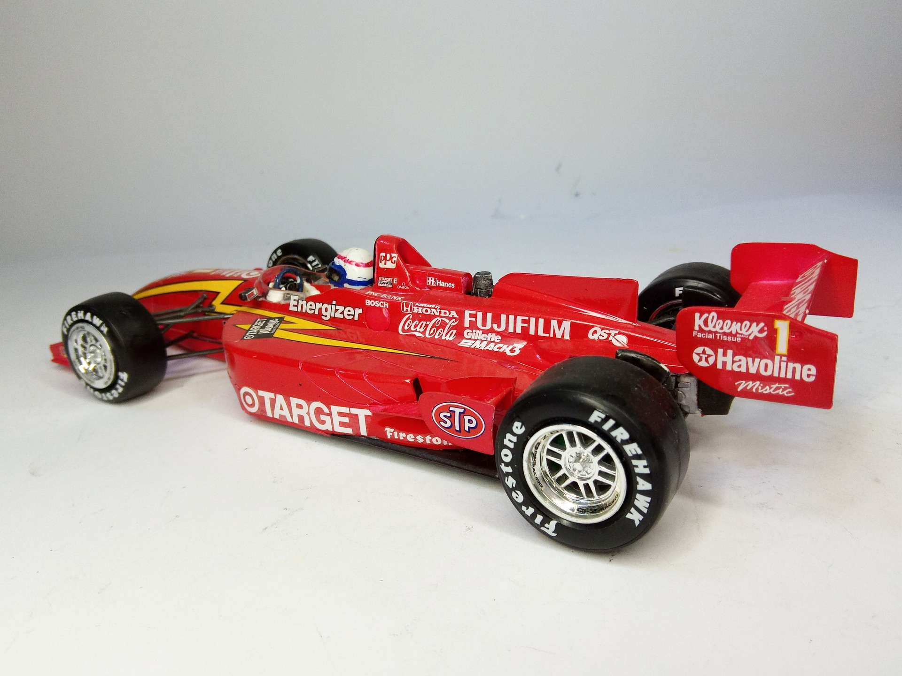

Auto e veicoli stradali · scale model archive
Reynard 98i Honda Target Indycar
Reynard 98i Honda Target Indycar — Kit: Revell, Scale: 1/24. Chip Ganassi team , driver Alex Zanardi winner of CART championship 1996 #1724 #Revell…

Photo gallery

English description
Chip Ganassi team , driver Alex Zanardi winner of CART championship 1996
#1724 #Revell #Reynard
Descrizione italiana
Team Chip Ganassi, pilota Alex Zanardi, vincitore del campionato CART 1996.